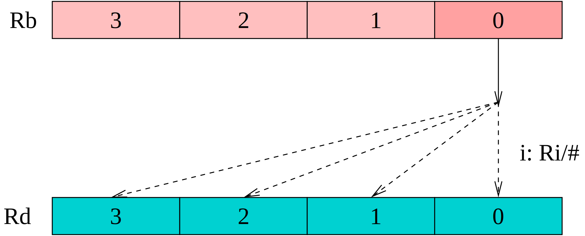

Fejlesztés Development | CPU | Számítógép Computer | Assembler | Monitor | Függvények Library
MindAll: ADC ADD AND BTST CALL CES CLC CMP GETB GETBS GETBZ GETF LD MOV MUL MVH MVL MVS MVZL NEG NOT OR PLUS PUTB RDS ROL ROR SBB SEB SEC SED SETF SEW SHA SHL SHR ST SUB SZ TEST WRS XOR ZEB ZEW
p2223 instruction code sheet A p2223 processzor utasításainak kódolása
A mikroprocesszor egy RISC felépítésű (load/store), Neumann architektúrájú, 32 bites szoft processzor, amelyet FPGA-val valósíthatunk meg.
The microprocessor is a RISC (load/store) Neumann architecture, 32-bit software processor, which can be implemented with an FPGA.
A mikroprocesszor az alábbi építőelemekből áll.
The microprocessor consists of the following building blocks.
Az ütemező állítja elő a vezérlő jeleket a processzor többi eleme számára. Az ütemező állapot kódokat állít elő a működési fázisok jelzésére, az állapotok a clk bemenetre adott órajel hatására követik egymást. Az állapotok bináris sorszáma a clk_stat kimeneten jelenik meg. A reset bemenet az ütemezőt alaphelyzetbe állítja. The scheduler generates control signals for the other elements of the processor. The scheduler generates status codes to indicate the operating phases, the states follow each other in response to the clock signal given to the clk input. The binary sequence number of the states appears on the clk_stat output. The reset input resets the scheduler.
A vezérlőhöz tartozik még az ún. utasítás regiszter, amely a beolvasott utasítást tárolja a végrehajtás idejére. The controller also includes the so-called instruction register, which stores the code of the instruction for the duration of execution.
Mivel a processzor Neumann architektúrájú, ezért csak egy memória illesztővel rendelkezik. Ezen az illesztőn keresztül olvassa be az utasításokat, és ezen az illesztőn keresztül végzi el memória írási és olvasási műveleteket is. Az illesztő az mbus_aout kimeneteken adja ki a művelethez használandó memória címet (32 bites). Írás esetén a memóriába tárolandó adat az mbus_dout kimeneteken jelenik meg (32 bit). Ebben az esetben az mbus_wen kimenet magas szintű lesz (írás jelzés). Olvasás műveletnél a megcímzett memória tartalmát az mbus_din bemenetre kell juttatni, ekkor az mbus_wen kimenet alacsony lesz. Since the processor has a Neumann architecture, it has only one memory interface. It reads instructions through this interface, and it also performs memory read and write operations through the same interface. The interface outputs the memory address (32 bits) to be used for the operation on the mbus_aout outputs. In case of writing, the data to be stored in the memory appears on the mbus_dout outputs (32 bits). In this case, the mbus_wen output will be high (write signal). In case of a read operation, the contents of the addressed memory must be sent to the mbus_din input, in which case the mbus_wen output will be low.
A processzor által kezelt memória 32 bites szélességű, minden 32 bites rekesznek külön címe van. Memória műveletnél a processzor a megcímzett rekeszből 32 bites adatot olvas be, illetve 32 bites adatot ír ki. The memory managed by the processor is 32-bit wide, each 32-bit slot has a separate address. During a memory operation, the processor reads 32-bit data from the addressed slot, and writes 32-bit data.
A processzor állapota a belső regiszterekben tárolódik. A regiszter készlet 16 db 32 bites regiszterből áll. A regiszterek elnevezése: R0, R1...R15. The processor state is stored in internal registers. The register set consists of 16 registers, 32 bits each. They are named as R0, R1...R15.
A processzor az R15 regisztert használja program számlálóként (Program Counter), ezért ennek tartalma minden utasítás végrehajtásakor eggyel növekszik. The processor uses register R15 as a program counter (Program Counter), so its contents are incremented by one each time an instruction is executed.
A CALL utasítás a visszatéréshez szükséges címet az R14 (Link Register) regiszterbe menti. The CALL instruction saves the return address in the R14 register (Link Register).
A processzor nem használ verem műveleteket, a verem megszervezése a programozó feladata. Az ehhez szükséges verem mutató (Stack Pointer) céljára bármelyik regiszter felhasználható. A programok megírásakor az R13 regisztert használtuk SP-ként. The processor does not use stack operations, implmentating the stack is the programmer's responsibility. Any register can be used as stack pointer with appropriate addressing modes. When writing the programs, we used register R13 as SP.
A processzoron belül 16 speciális regiszterhez lehet hozzáférni, ezek között vannak írható és olvasható, illetve csak olvasható típusú regiszterek is. A speciális regisztereket az RDS és WRS utasításokkal lehet kezelni. Az RDS használható a regiszter kiolvasására, ugyanis ez az utasítás a megadott speciális regisztert egy általános regiszterbe másolja át. Az írható speciális regiszterek a WRS utasítással módosíthatók, amely az egyik általános regisztert a megadott speciális regiszterbe másolja. Within the processor, 16 special registers can be accessed, including writable, readable, and read-only registers. Special registers can be manipulated with the RDS and WRS instructions. RDS can be used to read a register, as this instruction copies the specified special register into a general register. Writable special registers can be modified with the WRS instruction, which copies one of the general registers into the specified special register.
A 0 sorszámú speciális regiszter a Flag regiszter, leírását lásd az Aritmetikai-logikai egység fejezetben. The special register with number 0 is the Flag register, see its description in the Arithmetic-Logic Unit chapter.
Csak olvasható regiszter, a processzor verziószámát tartalmazza. A regiszter 3. bájtja mindig 0. A 2. bájt tartalmazza a fő verzió számot, az 1. byte pedig az al verzió számot. A 0. bájt a kiadás sorszáma. Read-only register, contains the processor version number. The 3. byte of the register is always 0. The 2. byte contains the major version number and the 1. byte contains the minor version number. The 0. byte is the release number.
Csak olvasható regiszter, 1 értékű bitjei azt jelzik, hogy egyes adott funkciók a processzorban rendelkezésre állnak-e. A read-only register, its bits with a value of 1 indicate whether certain functions are available in the processor.
A bit 1 értékű, ha a GETB utasítás különféle változatai (GETB, GETBS, GETBZ) rendelkezésre állnak. The bit is set to 1 if different versions of the GETB instruction (GETB, GETBS, GETBZ) are available.
A bit 1 értékű, ha a speciális regiszterek, valamint a kezelésükhöz szükséges RDS, WRS utasítások rendelkezésre állnak. The bit is set to 1 if the special registers and the RDS and WRS instructions required to manage them are available.
A bit 1 értékű, ha a Flag regiszter 32 bites. The bit is set to 1 if the Flag register is 32 bits.
A bit 1 értékű, ha a CES utasítást ismeri a processzor. The bit is set to 1 if the CES instruction is known to the processor.
Csak olvasható regiszter, későbbi fejlesztésekhez fenntartva, értéke 0. Read-only register, reserved for future developments, value 0.
A 3..15 sorszámú regiszterek nincsenek megvalósítva, a sorszámok a későbbi fejlesztésekhez vannak fenntartva. Registers with serial numbers 3..15 are not implemented, they are reserved for later developments.
Az adat manipulációs műveleteket az ALU végzi, amely 32 bites egész (előjeles és előjel nélküli) adatokkal tud műveleteket végezni. Az ALU-nak 3 adat bemenete van: di, bi és az im. Data manipulation operations are performed by the ALU, which can operate on 32-bit integer data (signed and unsigned). The ALU has 3 data inputs: di, bi, and im.
A di bemenetre az eredményt eltároló regiszter eredeti (művelet előtti) értékét kell kötni. Az bi bemenetre a művelet operandusaként használt regiszter értéke kerül. A bi bemenetet olyan utasításoknál használja az ALU, amelyeknek regiszter operandusa van. A konstans operandusú utasításoknál a bi helyett a 16 bites imbemenet értéke lesz az operandus. Az im bemenetet az ALU 32 bitesre konvertálja, a konvertálás módja a művelettől függ. Az egy operandusú műveletek csak a di bemenetet használják, míg a két operandusú műveletek a di és a bi/im értékeket használják fel. Az operandus nélküli műveleteknél az eredmény a változatlan di bemeneti érték lesz. The di input must be connected to the original (before the operation) value of the register which will be storing the result. The bi input is the register value used as the operand of the operation. The bi input is used by the ALU for instructions that have a register operand. For instructions with a constant operand the 16-bit im input value will be the operand instead of bi. The im input is converted by the ALU to 32 bits, the conversion method depends on the operation. One-operand operations use only the di input, while two-operand operations use the di and the bi/im values. For operations without an operand the result will be the unchanged di input value.
Az fi bemenetre a flag regiszter művelet előtti értéke kerül, míg az op az elvégzendő művelet kódja. Az eredmény a res kimeneten jelenik meg, az fo kimenet a flag regiszter új értékét adja. A flag_en és a wb_en kimenetek azt mutatják, hogy az utasítás módosítja-e a flag, illetve az eredmény regisztert. The fi input takes the value of the flag register before the operation , while op is the code of the operation to be performed . The result is displayed on the res output, the fo output gives the new value of the flag register. The flag_en and wb_en outputs indicate whether the instruction modifies the flag or the result register.
Az aritmetikai egység a műveletek eredményének jellemzőit a FLAG regiszterben tárolja el. Ez a regiszter nem része az általános regiszter készletnek, a tartalmához az utasítások speciális módon férhetnek csak hozzá. A flag regiszter 32 bites, az alább felsorolt biteken kívüli egyéb bitek tetszőleges célra hsználhatók. The arithmetic unit stores the characteristics of the result of the operations in the FLAG register. This register is not part of the general register set, its contents can only be accessed by instructions in a special way. The flag register is 32 bits, the bits other than those listed below can be used for any purpose.
A Flag regiszter 1. bitje (Flag[1]). Aritmetikai műveletek után azt jelzi, hogy előjel nélkülinek tekintve az operandusokat, volt-e túlcsordulás (1: volt, 0: nem volt). Bit 1 of the Flag register (Flag[1]). After arithmetic operations, it indicates whether there was an overflow, considering the operands as unsigned (1: there was, 0: there was not).
A Flag regiszter 3. bitje (Flag[3]). Aritmetikai műveletek után azt jelzi, hogy előjelesnek tekintve az operandusokat, volt-e túlcsordulás (1: volt, 0: nem volt). Bit 3 of the Flag register (Flag[3]). After arithmetic operations, it indicates whether there was an overflow, considering the operands as signed (1: there was, 0: there was not).
A Flag regiszter 0. bitje (Flag[0]). Aritmetikai és logikai műveletek után után az eredmény 31. bitjét tartalmazza, vagyis annak előjelét jelzi (1: negatív, 0: pozitív). Bit 0 of the Flag register (Flag[0]). After arithmetic and logical operations, it contains the 31st bit of the result, i.e. it indicates its sign (1: negative, 0: positive).
A Flag regiszter 2. bitje (Flag[2]). Aritmetikai és logikai műveletek után azt jelzi, hogy az eredmény nulla-e (1: igen, 0: nem). Bit 2 of the Flag register (Flag[2]). After arithmetic and logical operations, it indicates whether the result is zero (1: yes, 0: no).
U: a Flag regiszter 5. bitje (Flag[5]). P: a Flag regiszter 4. bitje (Flag[4]). Az LD/ST utasítások konstans eltolású indexelt címzési módja esetén a báziscím regiszter megváltoztatási módját határozzák meg. U: bit 5 of the Flag register (Flag[5]). P: bit 4 of the Flag register (Flag[4]). The LD/ST instructions specify the method of changing the base address register in the case of constant offset indexed addressing mode.
A utasítások egyforma méretűek, minden utasítás kódja 32 bites, egy memória rekeszben tárolódik. Az utasításkészlet főbb csoportjai a következők: The instructions are of the same size, each instruction has a 32-bit code, and is stored in one memory location. The main groups of the instruction set are as follows:
Minden utasításnak lehet egy feltétele, az utasítás csak akkor végez állapot változtatást, illetve memória műveletet, ha a megadott feltétel igaz értékű. A feltétel az utasítás kódszavának legfelső 4 helyiértékű bitjén tárolódik. A lehetséges értékek következők: Each instruction can have a condition, the instruction will only perform a state change or memory operation if the specified condition is true. The condition is stored in the 4 most significant bits of the instruction's code word. The possible values are:
| KódCode | FeltételCondition | Flag | Működés pl. összehasonlítás esetén Operation e.g. in case of comparison |
|---|---|---|---|
| 0 | AL | - | Mindig igaz, az utasítás a Flag-ek értékétől függetlenül végrehajtódik Always true, the instruction is executed regardless of the value of Flags |
| 1 | EQ | Z=1 | op1 == op2 (equal) |
| 2 | NE | Z=0 | op1 != op2 (not equal) |
| 3 | CS, HS | C=1 | op1 >= op2 (unsigned higher or same) |
| 4 | CC, LO | C=0 | op1 < op2 (unsigned lower) |
| 5 | MI | S=1 | negatív eredménynegative result (signed) |
| 6 | PL | S=0 | pozitív eredménypositive result (signed) |
| 7 | VS | O=1 | van túlcsordulásthere is overflow (signed) |
| 8 | VC | O=0 | nincs túlcsordulásthere is no overflow (signed) |
| 9 | HI | C=1 && Z=0 | op1 > op2 (unsigned higher) |
| 10 | LS | C=0 || Z=1 | op1 <= op2 (unsigned lower or same) |
| 11 | GE | S==O | op1 >= op2 (signed greater than or equal) |
| 12 | LT | S!=O | op1 < op2 (signed less than) |
| 13 | GT | Z=0 && S==O | op1 > op2 (signed greater than) |
| 14 | LE | Z=1 || S!=O | op1 <= op2 (signed less than or equal) |
| 15 | - | - | Feltétel nélküli utasítás, az utasításkészlet bővítésre fenntartva Unconditional instruction, reserved for expansion of the instruction set |
Szubrutinhívásra a CALL utasítást lehet használni, amely a PC-t (R15) elmenti az LR-ben (R14). Ha a szubrutin nem hív más rutinokat, akkor nincs más teendő. Ellenkező esetben az LR értékét a memóriában kialakított verem adatszerkezetbe el kell menteni. Erre a célra az SP (R13) regisztert használjuk mutatóként, a mentés és a betöltés a memória kezelő utasítások megfelelő címzésmódjának használatával elvégezhető. Megjegyezzük, hogy verem mutatóként az R14 és R15 kivételével bármelyik regiszter használható. To call a subroutine, the CALL instruction can be used, which saves the PC (R15) in the LR (R14). If the subroutine does not call other routines, then there is no other action to take. Otherwise, the value of LR must be saved in the stack data structure created in memory. For this purpose, the SP (R13) register is used as a pointer, and saving and loading can be done using the appropriate addressing mode of the memory management instructions. Note that any register except R14 and R15 can be used as a stack pointer.
Ugró utasítások nincsenek az utasítás készletben, bármely utasítás ugrást végez (beleértve az LD utasítást is), amelynek az R15 a cél regisztere, ahol az eredménye tárolódik. Mivel minden utasítás lehet feltételes, így külön feltételes vezérlésátadó utasításokra sincs szükség. There are no jump instructions in the instruction set, any instruction will perform a jump (including the LD instruction), whose destination register is R15, where its result is stored. Since every instruction can be conditional, there is no need for any separate conditional branch instructions.
| GETB | Rd,Rb,Ri | COND.0110.Rd .0001.000-.Rb .----.Ri | i= Ri[1:0] Rd[7:0]= Rb[i*8+7:i*8] |
| GETB | Rd,Rb,u2 | COND.0110.Rd .0001.100-.Rb .----.--u2 | Rd[7:0]= Rb[u2*8+7:u2*8] |
Az utasítás az Rb regiszter kiválasztott bájtját az Rd regiszterbe másolja, az Rd felső helyiértékű 3 bájtja nem változik. Az Rb regiszter 4 bájtja közül a másoláshoz egyet lehet kiválasztani, vagy az Ri regiszter értékével, vagy egy 2 bites konstanssal. Ha az Ri-vel választunk, akkor a processzor a regiszternek csak az alsó két bitjét használja. The instruction copies the selected byte of the Rb register into the Rd register, the upper 3 bytes of Rd are not changed. One of the 4 bytes of the Rb register can be selected for copying, either by the value of the Ri register or by a 2-bit constant. If we select with Ri, the processor uses only the lower two bits of the register.
| GETBS | Rd,Rb,Ri | COND.0110.Rd .0001.011-.Rb .----.Ri | i= Ri[1:0] Rd= sex(Rb[i*8+7:i*8]) |
| GETBS | Rd,Rb,u2 | COND.0110.Rd .0001.111-.Rb .----.--u2 | Rd=sex(Rb[u2*8+7:u2*8]) |
Az utasítás az Rb regiszter kiválasztott bájtját az Rd regiszterbe másolja, az Rd felső helyiértékű 3 bájtja az Rb kiválasztott byte-jának 7. bitjével töltődik fel. Az Rb regiszter 4 bájtja közül a másoláshoz egyet lehet kiválasztani, vagy az Ri regiszter értékével, vagy egy 2 bites konstanssal. Ha az Ri-vel választunk, akkor a processzor a regiszternek csak az alsó két bitjét használja. The instruction copies the selected byte of the Rb register into the Rd register, the upper 3 bytes of Rd are filled with the 7th bit of the selected byte of Rb. One of the 4 bytes of the Rb register can be selected for copying, either by the value of the Ri register or by a 2-bit constant. If we select with Ri, then the processor uses only the lower two bits of the register.
| GETBZ | Rd,Rb,Ri | COND.0110.Rd .0001.010-.Rb .----.Ri | i= Ri[1:0] Rd= zex(Rb[i*8+7:i*8]) |
| GETBZ | Rd,Rb,u2 | COND.0110.Rd .0001.110-.Rb .----.--u2 | Rd= zex(Rb[u2*8+7:u2*8]) |

Az utasítás az Rb regiszter kiválasztott bájtját az Rd regiszterbe másolja, az Rd felső helyiértékű 3 bájtja 0 lesz. Az Rb regiszter 4 bájtja közül a másoláshoz egyet lehet kiválasztani, vagy az Ri regiszter értékével, vagy egy 2 bites konstanssal. Ha az Ri-vel választunk, akkor a processzor a regiszternek csak az alsó két bitjét használja. The instruction copies the selected byte of the Rb register to the Rd register, the upper 3 bytes of Rd will be 0. One of the 4 bytes of the Rb register can be selected for copying, either by the value of the Ri register or by a 2-bit constant. If we select with Ri, then the processor uses only the lower two bits of the register.
| GETF | Rd | COND.0010.Rd .1110.----.----.----.---- | Rd= F[UPOZCS] |
Az utasítás átmásolja a Flag regiszter értékét (beleértve az U és P biteket is) a megadott Rd regiszterbe. A jelzőbitek a Flag regiszter 0-5 bitjeit foglalják el, a regiszter azonban 32 bites. A 31-6 bitek tetszőleges érték tárolására használhatók. The instruction copies the value of the Flag register (including the U and P bits) into the specified Rd register. The flag bits occupy bits 0-5 of the Flag register, but the register is 32 bits long. Bits 31-6 can be used to store any value.
| MOV | Rd,Rb | COND.0000.Rd .0000.----.Rb .----.---- | Rd= Rb |
Az utasítás az Rb regiszter (forrás) tartalmát átmásolja az Rd (cél) regiszterbe. The instruction copies the contents of the Rb register (source) to the Rd register (destination).
| MVH | Rd,u16 | COND.0001.Rd .0001.u16 .u16 .u16 .u16 | Rd[31:16]= u16 |
Az utasítás egy regiszter konstanssal való feltöltésére használható. Az utasítás második paramétere egy unsigned 16 bites konstans, amely az Rd regiszter felső helyiértékű 16 bitjébe kerül. A regiszter alsó helyiértékű 16 bitje változatlan marad. A Flag regiszter nem módosul. This instruction can be used to load a register with a constant. The second parameter of the instruction is an unsigned 16-bit constant, which is placed in the upper 16 bits of the Rd register. The lower 16 bits of the register remain unchanged. The Flag register is not modified.
| MVL | Rd,u16 | COND.0001.Rd .0000.u16 .u16 .u16 .u16 | Rd[15:0]= u16 |
Az utasítás egy regiszter konstanssal való feltöltésére használható. Az utasítás második paramétere egy unsigned 16 bites konstans, amely az Rd regiszter alsó helyiértékű 16 bitjébe kerül. A regiszter felső helyiértékű 16 bitje változatlan marad. A Flag regiszter nem módosul. The instruction can be used to load a register with a constant. The second parameter of the instruction is an unsigned 16-bit constant, which is placed in the lower 16 bits of the Rd register. The upper 16 bits of the register remain unchanged. The Flag register is not modified.
| MVS | Rd,s16 | COND.0001.Rd .0011.s16 .s16 .s16 .s16 | Rd= sex(s16) |
Az utasítás egy regiszter konstanssal való feltöltésére használható. Az utasítás második paramétere egy signed 16 bites konstans, amelyet a CPU előjel kiterjesztéssel 32 bitesre alakít, ez az érték kerül az Rd regiszterbe. A Flag regiszter nem módosul. This instruction can be used to load a register with a constant. The second parameter of the instruction is a signed 16-bit constant, which the CPU converts to a 32-bit constant with sign extension, and this value is placed in the Rd register. The Flag register is not modified.
| MVZL | Rd,u16 | COND.0001.Rd .0010.u16 .u16 .u16 .u16 | Rd= zex(u16) |
Az utasítás egy regiszter konstanssal való feltöltésére használható. Az utasítás második paramétere egy unsigned 16 bites konstans, amelyet a CPU 0 kiterjesztéssel 32 bitesre alakít, ez az érték kerül az Rd regiszterbe. A Flag regiszter nem módosul. The instruction can be used to fill a register with a constant. The second parameter of the instruction is an unsigned 16-bit constant, which the CPU converts to 32-bit with extension 0, and this value is placed in the Rd register. The Flag register is not modified.
| PUTB | Rd,Rb,Ri | COND.0111.Rd .0001.0---.Rb .----.Ri | i=Ri[1:0] Rd[i*8+7:i*8]=Rb[7:0] |
| PUTB | Rd,Rb,u2 | COND.0111.Rd .0001.0---.Rb .----.--u2 | Rd[u2*8+7:u2*8]=Rb[7:0] |

Az utasítás az Rb regiszter legalsó helyiértékű bájtját átmásolja az Rd regiszter kiválasztott bátjába, úgy, hogy az Rd többi bájtja nem változik. Az Rd módosítandó bájtjának sorszámát az Ri regiszterrel (amelynek csak a legalsó két bitjét használja a processzor), vagy egy két bites konstanssal választhatjuk ki. The instruction copies the least significant byte of the Rb register into the selected byte of the Rd register, leaving the other bytes of Rd unchanged. The number of the byte of Rd to be modified can be selected using the Ri register (only the two least bits of which are used by the processor) or a two-bit constant.
| RDS | Rd,Rs | COND.0110.Rd .0010.----.Rs .----.---- | Rd= Rs |
Az Rs sorszámú speciális regiszter kiolvasása és átmásolása az Rd regiszterbe. Read and copy the special register with serial number Rs into the Rd register.
| SEB | Rd | COND.0010.Rd .0010.----.----.----.---- | Rd= sex(Rd[7:0]) |
Az utasítás az Rd regiszter tartalmának alsó helyiértékű 8 bitjét előjel kiterjesztéssel kibővíti 32 bitre, majd ezt az eredményt tárolja az Rd regiszterben (felülíródik). A Flag regiszter nem változik. The instruction extends the lower 8 bits of the contents of the Rd register to 32 bits by sign extension, and then stores this result in the Rd register (it is overwritten). The Flag register is not changed.
| SED | Rd,Rb | COND.0000.Rd .0011.----.Rb .----.---- | Rd= sex(Rb) |
Előjel kiterjesztés 32 bitről 64 bitre. Az utasítás az Rb előjelével (Rb[31] bit) tölti fel az Rd minden bitjét, így az Rd,Rb regiszterek együtt az Rb-nek a 64 bitre kiterjesztett értékét fogják tartamazni. Az utasítás nem módosítja a Flag regisztert. Sign extension from 32 bits to 64 bits. The instruction fills each bit of Rd with the sign of Rb (Rb[31] bits), so the Rd,Rb registers together will contain the 64-bit extended value of Rb. The instruction does not modify the Flag register.
| SEB | Rd | COND.0010.Rd .0011.----.----.----.---- | Rd= sex(Rd[15:0]) |
Az utasítás az Rd regiszter tartalmának alsó helyiértékű 16 bitjét előjel kiterjesztéssel kibővíti 32 bitre, majd ezt az eredményt tárolja az Rd regiszterben (felülíródik). A Flag regiszter nem változik. The instruction extends the lower significant 16 bits of the contents of the Rd register to 32 bits by sign extension, and then stores this result in the Rd register (it is overwritten). The Flag register is not changed.
| SETF | Rd | COND.0010.Rd .1111.----.----.----.---- | F[UPOZCS]= Rd |
Az utasítás az Rd regiszter értékét a Flag regiszterbe másolja. A használt Flag bitek a regiszter 0-5 bitjeit foglalják el, de a regiszter 32 bites. A 31-6 bitek tetszőleges érték tárolására használhatók. The instruction copies the value of the Rd register to the Flag register. The Flag bits used occupy bits 0-5 of the register, but the register is 32-bit. Bits 31-6 can be used to store any value.
| WRS | Rd,Rs | COND.0111.Rd .0010.----.Rs .----.---- | Rs= Rd |
Az Rd regiszter átmásolása az Rs sorszámú speciális regiszterbe. Copy the register Rd to the special register with the serial number Rs.
| ZEB | Rd | COND.0010.Rd .0000.----.----.----.---- | Rd= zex(Rd[7:0]) |
Az utasítás az Rd regiszter tartalmának alsó helyiértékű 8 bitjét 0 kiterjesztéssel kibővíti 32 bitre, majd ezt az eredményt tárolja az Rd regiszterben (felülíródik). A Flag regiszter nem változik. The instruction extends the lower 8 bits of the contents of the Rd register to 32 bits with an extension of 0, and then stores this result in the Rd register (overwrites it). The Flag register is not changed.
| ZEW | Rd | COND.0010.Rd .0001.----.----.----.---- | Rd= zex(Rd[15:0]) |
Az Rd[15:0] bitjein lévő 16 bites adat 0 kiterjesztése 32 bitesre. Az eredmény az Rd regiszterbe kerül (felülíródik). Az utasítás a Flag regisztert nem módosítja. The 16-bit data at bits Rd[15:0] is 0 extended to 32 bits. The result is placed in the Rd register (overwritten). The instruction does not modify the Flag register.
| CALL | u24 | COND.0100.u24 .u24 .u24 .u24 .u24 .u24 | R14= R15 R15= zex(u24) |
| CALL | Rd,s20 | COND.0101.Rd .s20 .s20 .s20 .s20 .s20 | R14= R15 R15= Rd+sex(s20) |
Az utasítás működése az abszolút címzésmódú változat esetén: The operation of the instruction in the case of the absolute addressing version:
R14= R15
R15= zex(u24)
Ahol a zex() művelet a Zero Extension-t jelenti, vagyis az utasításban szereplő unsigned 24 bites paramétert a CPU nullákkal bővíti 32 bit méretűre. Ezzel az utasítással a memória első 16 MB-ja érhető el. Where the zex() operation stands for Zero Extension, meaning that the unsigned 24-bit parameter in the instruction is expanded by the CPU with zeros to a size of 32 bits. With this instruction, the first 16 MB of the memory can be accessed.
Az utasítás működése relatív címzési mód esetén: The operation of the instruction in relative addressing mode:
R14= R15
R15= Rd + sex(s20)
Ahol a sex() a Sign Extension műveletet jelenti, ami az utasításban megadott signed 20 bites paramétert előjel megtartással bővíti 32 bites méretűre. Ha az Rd az R15, akkor figyelembe kell venni, hogy az R15 az összeadás elvégzésekor a következő utasítás címét tartalmazza. Az R15 használata lehetővé teszi pozíció független kód készítését, ahol az elérhető cím a hívás helyétől ±0.5 MB távolságon belül lehet. Where sex() stands for Sign Extension operation, which extends the signed 20-bit parameter specified in the instruction to a 32-bit size with sign preservation. If Rd is R15, then it should be noted that R15 contains the address of the next instruction when the addition is performed. Using R15 allows to create position-independent code, where the accessible address can be within ±0.5 MB of the call location.
| CALL | u24 | 1111.0100.u24 .u24 .u24 .u24 .u24 .u24 | R14= R15 R15= zex(u24) |
| CALL | Rd,s20 | 1111.0101.Rd .s20 .s20 .s20 .s20 .s20 | R14= R15 R15= Rd+sex(s20) |
Az utasítás működése megegyezik a CALL utasítással, azonban feltételt nem lehet megadni, a szubrutinhívás feltétel nélkül megtörténik. Az utasítást abban az esetben célszerű használni, amikor a hívás utasítás után közvetlenül egy beágyazott sztring van a memóriában, amely a szubrutin paramétere. Az ilyen szubrutinok nem a hívás utáni, hanem a sztring utáni utasításra térnek vissza. A CES utasítás használata segíti a szimulátort a visszatérési cím megállapításában, hogy a szubrutin a next paranccsal lefuttatható legyen. The operation of the instruction is the same as the CALL instruction, however, a condition cannot be specified, the subroutine call is made without a condition. The instruction is useful when there is an embedded string in memory immediately after the call instruction which is the parameter of the subroutine. Such subroutines do not return to the instruction following the call, but to the string following it. Using the CES instruction helps the simulator determine the return address so that the subroutine can be executed with the simulator's next command.
| LD | Rd,u16 | COND.0111.Rd .0000.u16 .u16 .u16 .u16 | Rd= M[zex(u16)] |
| LD | Rd,Ra,Rb | COND.1010.Rd .Ra .----.Rb .----.---- | Rd= M[Ra+Rb] |
| LD | Rd,Ra+,Rb | COND.1011.Rd .Ra .10--.Rb .----.---- | Rd= M[(Ra++)+Rb] |
| LD | Rd,Ra-,Rb | COND.1011.Rd .Ra .00--.Rb .----.---- | Rd= M[(Ra--)+Rb] |
| LD | Rd,+Ra,Rb | COND.1011.Rd .Ra .11--.Rb .----.---- | Rd= M[(++Ra)+Rb] |
| LD | Rd,-Ra,Rb | COND.1011.Rd .Ra .01--.Rb .----.---- | Rd= M[(--Ra)+Rb] |
| LD | Rd,Ra,s16 | COND.1110.Rd .Ra .s16 .s16 .s16 .s16 | Rd= M[Ra+sex(s16)] |
| LD | Rd,*Ra,s16 | COND.1111.Rd .Ra .s16 .s16 .s16 .s16 | Rd= M[(*Ra)+sex(s16)] |
A memória címe megadható direkt, vagy indexelt címzésmóddal. Direkt címésmód esetén a cím mérete unsigned 16 bit lehet, ami a címtér első 64 kB-jának az elérését teszi lehetővé. Memory addresses can be specified using direct or indexed addressing. In direct addressing, the address size can be unsigned 16 bits, which allows access to the first 64 KB of the address space.
Indexelt címzésmód esetén a bázis cím az Ra regiszterben van, amihez hozzáadódik egy eltolási érték, amely lehet az Rb regiszter, vagy egy signed 16 bites konstans. Indexelt címzés esetén kérhetjük a bázis regiszter módosítását. Ha regiszter eltolást alkalmazunk, akkor az Ra változtatását az utasításban adhatjuk meg, amely lehet pre-increment (növelés eggyel a cím számítás előtt), pre-decrement (csökkentés eggyel a cím számítás előtt), post-increment (növelés eggyel a cím számítás után), vagy post-decrement (csökkentés eggyel a cím számítás után). Ebben az esetben az utasítás módosítja mind az Rd, mind az Ra regisztert. Ha az Rd és az Ra regiszter ugyanaz, akkor a memóriából beolvasott adat felülírja a címet. In the case of indexed addressing, the base address is in the Ra register, to which an offset value is added, which can be the Rb register or a signed 16-bit constant. In the case of indexed addressing, we can request the modification of the base register. If we use a register offset, then the change of Ra can be specified in the instruction, which can be pre-increment (increase by one before the address calculation), pre-decrement (decrease by one before the address calculation), post-increment (increase by one after the address calculation), or post-decrement (decrease by one after the address calculation). In this case, the instruction modifies both the Rd and Ra registers. If the Rd and Ra registers are the same, the data read from the memory overwrites the address.
Konstans eltolás esetén a módosítás módját nem az utasítás, hanem a FLAG regiszter U és P bitjei határozzák meg, erre utal a fenti táblázatban a * jelölés: In the case of a constant offset, the modification method is not determined by the instruction, but by the U and P bits of the FLAG register, as indicated by the * in the table above:
| U | P | Ra módosítása: *Ra |
| 0 | 0 | pre-increment: ++Ra |
| 0 | 1 | post-increment: Ra++ |
| 1 | 0 | pre-decrement: --Ra |
| 1 | 1 | post-decrement: Ra-- |
| ST | Rd,u16 | COND.0110.Rd .0000.u16 .u16 .u16 .u16 | M[zex(u16)]= Rd |
| ST | Rd,Ra,Rb | COND.1000.Rd .Ra .----.Rb .----.---- | M[Ra+Rb]= Rd |
| ST | Rd,Ra+,Rb | COND.1001.Rd .Ra .10--.Rb .----.---- | M[(Ra++)+Rb]= Rd |
| ST | Rd,Ra-,Rb | COND.1001.Rd .Ra .00--.Rb .----.---- | M[(Ra--)+Rb]= Rd |
| ST | Rd,+Ra,Rb | COND.1001.Rd .Ra .11--.Rb .----.---- | M[(++Ra)+Rb]= Rd |
| ST | Rd,-Ra,Rb | COND.1001.Rd .Ra .01--.Rb .----.---- | M[(--Ra)+Rb]= Rd |
| ST | Rd,Ra,s16 | COND.1100.Rd .Ra .s16 .s16 .s16 .s16 | M[Ra+sex(s16)]= Rd |
| ST | Rd,*Ra,s16 | COND.1101.Rd .Ra .s16 .s16 .s16 .s16 | M[(*Ra)+sex(s16)]= Rd |
A memória címe megadható direkt, vagy indexelt címzésmóddal. Direkt címésmód esetén a cím mérete unsigned 16 bit lehet, ami a címtér első 64 kB-jának az elérését teszi lehetővé. Memory addresses can be specified using direct or indexed addressing. In direct addressing, the address size can be unsigned 16 bits, which allows access to the first 64 KB of the address space.
Indexelt címzésmód esetén a bázis cím az Ra regiszterben van, amihez hozzáadódik egy eltolási érték, amely lehet az Rb regiszter, vagy egy signed 16 bites konstans. Indexelt címzés esetén kérhetjük a bázis regiszter módosítását. Ha regiszter eltolást alkalmazunk, akkor az Ra változtatását az utasításban adhatjuk meg, amely lehet pre-increment (növelés eggyel a cím számítás előtt), pre-decrement (csökkentés eggyel a cím számítás előtt), post-increment (növelés eggyel a cím számítás után), vagy post-decrement (csökkentés eggyel a cím számítás után). In the case of indexed addressing, the base address is in the Ra register, to which is added an offset value, which can be the Rb register or a signed 16-bit constant. In the case of indexed addressing, we can request a modification of the base register. If we use register offset, then the change in Ra can be specified in the instruction, which can be pre-increment (increase by one before the address calculation), pre-decrement (decrease by one before the address calculation), post-increment (increase by one after the address calculation), or post-decrement (decrease by one after the address calculation).
Konstans eltolás esetén a módosítás módját nem az utasítás, hanem a FLAG regiszter U és P bitjei határozzák meg, erre utal a fenti táblázatban a * jelölés: In the case of a constant offset, the modification method is not determined by the instruction, but by the U and P bits of the FLAG register, as indicated by the * in the table above:
| U | P | Ra módosítása: *Ra Modification of Ra: *Ra |
|---|---|---|
| 0 | 0 | post-decrement: Ra-- |
| 0 | 1 | pre-decrement: --Ra |
| 1 | 0 | post-increment: Ra++ |
| 1 | 1 | pre-increment: ++Ra |
| ADC | Rd,Rb | COND.0000.Rd .0101.----.Rb .----.---- | Rd,F[OZCS]= Rd + Rb + C |
| ADC | Rd,s16 | COND.0001.Rd .0101.s16 .s16 .s16 .s16 | Rd,F[OZCS]= Rd + sex(s16) + C |
Összeadás átvitel figyelembevételével. Az első operandus egyúttal az eredmény tárolási helye is (felülíródik). A második operandus regiszter, vagy signed 16 bites konstans lehet. A művelet mind a négy aritmetikai flag-et módosítja. Addition with carry. The first operand is also the storage location for the result (overwritten). The second operand can be a register or a signed 16 bit constant. The operation modifies all four arithmetic flags.
| ADD | Rd,Rb | COND.0000.Rd .0100.----.Rb .----.---- | Rd,F[OZCS]= Rd + Rb |
| ADD | Rd,s16 | COND.0001.Rd .0100.s16 .s16 .s16 .s16 | Rd,F[OZCS]= Rd + sex(s16) |
Összeadás átvitel figyelembe vétele nélkül. Az első operandus egyúttal az eredmény tárolási helye is (felülíródik). A második operandus regiszter, vagy signed 16 bites konstans lehet. A művelet mind a négy aritmetikai flag-et módosítja. Addition without carry. The first operand is also the storage location for the result (it is overwritten). The second operand can be a register or a signed 16 bit constant. The operation modifies all four arithmetic flags.
| AND | Rd,Rb | COND.0000.Rd .1111.----.Rb .----.---- | Rd,F[ZS]= Rd & Rb |
| AND | Rd,o16 | COND.0001.Rd .1111.o16 .o16 .o16 .o16 | Rd,F[ZS]= Rd & oex(o16) |
Logikai ÉS művelet az operandusok azonos pozíciójú bitjei között. Az első operandus egyúttal az eredmény tárolási helye is (felülíródik). A második operandus regiszter, vagy 16 bites konstans lehet. A konstans 32 bitesre való kiterjesztése mindig 1-es értékű bitekkel történik. Az utasítás ebben a formában bitek 0-ba állítására használható, ha a törlendő bitek a 0-15 pozíciók között találhatók. Logical AND operation between the bits of the operands in the same position. The first operand is also the storage location for the result (it is overwritten). The second operand can be a register, or a 16-bit constant. The constant is always expanded to 32-bit with bits with the value 1. The instruction in this form can be used to set bits to 0 if the bits to be cleared are located between positions 0-15.
| BTST | Rd,Rb | COND.0000.Rd .1011.----.Rb .----.---- | Rd,F[ZS]= Rd & Rb |
| BTST | Rd,u16 | COND.0001.Rd .1011.u16 .u16 .u16 .u16 | Rd,F[ZS]= Rd & zex(u16) |
Logikai ÉS művelet az operandusok azonos pozíciójú bitjei között. Az első operandus egyúttal az eredmény tárolási helye is (felülíródik). A második operandus regiszter, vagy unsigned 16 bites konstans lehet. A konstans 32 bitesre való kiterjesztése mindig 0 értékű bitekkel történik. Az utasítás ebben a formában bit értékének a vizsgálatára használható, ha a vizsgált bit a 0-15 pozíció között található. Az utasítás csak a Z és S flag-et módosítja. Logical AND operation between the bits of the operands in the same position. The first operand is also the storage location for the result (it is overwritten). The second operand can be a register, or an unsigned 16-bit constant. The constant is always extended to 32-bit with bits of value 0. The instruction in this form can be used to examine the value of a bit if the examined bit is located between positions 0-15. The instruction only modifies the Z and S flags.
| CLC | - | COND.0010.----.1101.----.----.----.---- | F[C]= 0 |
Az utasítás 0 értéket ír a Flag regiszter C bitjébe. Más hatása nincs. The instruction writes a value of 0 to bit C of the Flag register. It has no other effect.
| CMP | Rd,Rb | COND.0000.Rd .1000.----.Rb .----.---- | F[OZCS]= Rd + Rb + 1 |
| CMP | Rd,s16 | COND.0001.Rd .1000.s16 .s16 .s16 .s16 | F[OZCS]= Rd + sex(s16) + 1 |
Az utasítás a két operandus összehasonlítására használható. A működése megegyezik a SUB utasítással, azonban a kivonás eredményét nem tárolja, az első operandus regisztere (Rd) változatlan marad, csak a Flag regiszter aritmetikai bitjei módosulnak. The instruction can be used to compare two operands. Its operation is the same as the SUB instruction, but it does not store the result of the subtraction, the register (Rd) of the first operand remains unchanged, only the arithmetic bits of the Flag register are changed.
| MUL | Rd,Rb | COND.0000.Rd .1001.----.Rb .----.---- | Rd,F[ZS]= Rd * Rb |
| MUL | Rd,s16 | COND.0001.Rd .1001.s16 .s16 .s16 .s16 | Rd,F[ZS]= Rd * sex(Rb) |
Az utasítás a két operandus értékét szorozza össze, az eredmény alsó helyiértékű 32 bitje az Rd regiszterbe kerül. Az eredmény felső helyiértékű 32 bitje elvész. Az utasítás csak a Z és S Flag biteket módosítja. The instruction multiplies the values of the two operands and the lower 32 bits of the result are placed in the Rd register. The upper 32 bits of the result are lost. The instruction only modifies the Z and S Flag bits.
| NEG | Rd | COND.0010.Rd .0101.----.----.----.---- | Rd,F[OZCS]= Rd + 1 |
Az utasítás a signed 32 bitesnek tekintett Rd regiszter értékének az előjelét az ellenkezőjére állítja, az eredmény az Rd regiszterbe kerül. A CPU a műveletet az Rd=0-Rd kivonás elvégzésével számítja ki, a Flag biteket ennek megfelelően állítja be. The instruction reverses the sign of the value in the Rd register, which is considered a signed 32-bit register, and the result is placed in the Rd register. The CPU calculates the operation by Rd=0-Rd, setting the Flag bits accordingly.
| NOT | Rd | COND.0010.Rd .0100.----.----.----.---- | Rd,F[ZS]= Rd |
A művelet az Rd bitjeit egyenként negálja, az eredmény az Rd regiszterbe kerül. Az utasítás csak a Z és S Flag biteket módosítja. The operation negates the bits of Rd one by one, the result is placed in the Rd register. The instruction only modifies the Z and S Flag bits.
| OR | Rd,Rb | COND.0000.Rd .1101.----.Rb .----.---- | Rd,F[ZS]= Rd | Rb |
| OR | Rd,u16 | COND.0001.Rd .1101.u16 .u16 .u16 .u16 | Rd,F[ZS]= Rd | zex(u16) |
Logikai VAGY művelet az operandusok azonos pozíciójú bitjei között. Az első operandus egyúttal az eredmény tárolási helye is (felülíródik). A második operandus regiszter, vagy 16 bites konstans lehet. A konstans 32 bitesre való kiterjesztése mindig 0-s értékű bitekkel történik. Az utasítás ebben a formában bitek 1-be állítására használható, ha a beállítandó bitek a 0-15 pozíciók között találhatók. Logical OR operation between the bits of the operands in the same position. The first operand is also the storage location for the result (it is overwritten). The second operand can be a register, or a 16-bit constant. The constant is always expanded to 32-bit with 0 bits. The instruction in this form can be used to set bits to 1 if the bits to be set are in positions 0-15.
| PLUS | Rd,Rb | COND.0000.Rd .1010.----.Rb .----.---- | Rd= Rd + Rb |
| PLUS | Rd,s16 | COND.0001.Rd .1010.s16 .s16 .s16 .s16 | Rd= Rd + sex(s16) |
Összeadás átvitel figyelembe vétele és a Flag regiszter módosítása nélkül. Az első operandus egyúttal az eredmény tárolási helye is (felülíródik). A második operandus regiszter, vagy signed 16 bites konstans lehet. Az utasítás eredménye megegyezik az ADD utasítás eredményével, azonban a Flag regisztert nem módosítja. Addition without taking into account carry and without modifying the Flag register. The first operand is also the storage location for the result (it is overwritten). The second operand can be a register or a signed 16-bit constant. The result of the instruction is the same as the result of the ADD instruction, but the Flag register is not modified.
| ROL | Rd | COND.0010.Rd .0111.----.----.----.---- | Rd,F[CZS]= rol(C,Rd) |
33 bites forgatás balra a C bittel együtt. A C Flag bit értéke az Rd[31] bit forgatás előtti értéke lesz. A C Flag bit forgatás előtti értéke az Rd[0] bitbe kerül. A forgatás után a Z és S Flag bitek az Rd-nek megfelelő értéket veszik fel. 33-bit left rotation including the C bit. The C Flag bit value will be the value of the Rd[31] bit before the rotation. The C Flag bit value before the rotation is placed in the Rd[0] bit. After the rotation, the Z and S Flag bits will take the value corresponding to Rd.
| ROR | Rd | COND.0010.Rd .0110.----.----.----.---- | Rd,F[CZS]= ror(Rd,C) |
33 bites forgatás jobbra a C Flag bittel együtt. A C Flag értéke az Rd[0] bit forgatás előtti értéke lesz. A C Flag bit forgatás előtti értéke az Rd[31] bitbe kerül. A forgatás után a Z és S Flag bitek az Rd-nek megfelelő értéket veszik fel. 33-bit right rotation along with the C Flag bit. The value of the C Flag bit will be the value of the Rd[0] bit before the rotation. The value of the C Flag bit before the rotation is put into the Rd[31] bit. After the rotation, the Z and S Flag bits will take the value according the Rd.
| SBB | Rd,Rb | COND.0000.Rd .0111.----.Rb .----.---- | Rd,F[OZCS]= Rd + Rb + C |
| SBB | Rd,s16 | COND.0001.Rd .0111.s16 .s16 .s16 .s16 | Rd,F[OZCS]= Rd + sex(s16) + C |
Kivonás művelet. Az első operandus (Rd) egyúttal az eredmény tárolási helye is (felülíródik). A második operandus egy 32 bites regiszter, vagy egy signed 16 bites konstans lehet, amelyet a CPU előjel kiterjesztéssel alakít 32 bitesre. A második operandus negáltját adja hozzá az elsőhöz Rd=Rd+(-op2), úgy, hogy kezdő átvitelként a C Flag bitet használja fel. A kivonás után a C Flag 0 értéke jelenti azt, hogy túlcsordulás keletkezett. Subtraction operation. The first operand (Rd) is also the storage location for the result (it is overwritten). The second operand can be a 32-bit register or a signed 16-bit constant, which the CPU converts to 32-bit by sign extension. The negation of the second operand is added to the first, Rd=Rd+(-op2), using the C Flag bit as the initial carry. After the subtraction, a value of 0 in the C Flag means that an overflow has occurred.
| SEC | COND.0010.----.1100.----.----.----.---- | F[C]= 1 |
Az utasítás a C Flag bitet 1 értékűre állítja. Más hatása nincs. The instruction sets the C Flag bit to 1. It has no other effect.<
| SHA | Rd | COND.0010.Rd .1010.----.----.----.---- | Rd,F[ZCS]= sha(Rd) |

Előjeles 32 bites adat aritmetikai (előjel tartó) eltolása jobbra 1 bittel. A C Flag bit az Rd[0] eltolás előtti értékét veszi fel. Az Rd[31] bit értéke nem változik, a 32 bites adat megtartja az előjelét. A Z és S Flag bitek az Rd eltolás utáni értéke alapján kapnak értéket. Arithmetic (sign-retaining) shift of signed 32-bit data to the right by 1 bit. The C Flag bit takes the value of Rd[0] before the shift. The value of the Rd[31] bit does not change, the 32-bit data retains its sign. The Z and S Flag bits are given values based on the value of Rd after the shift.
| SHL | Rd | COND.0010.Rd .1000.----.----.----.---- | Rd,F[ZCS]= shl(Rd) |

Eltolás balra 1 bittel. A C Flag bit az Rd[31] eltolás előtti értékét kapja, az Rd[0] bitje 0 lesz. A Z és S Flag bitek az Rd eltolás utáni értékének megfelelően módosul. Shift left by 1 bit. The C Flag bit gets the value of Rd[31] before the shift, the Rd[0] bit becomes 0. The Z and S Flag bits change according to the value of Rd after the shift.
| SHR | Rd | COND.0010.Rd .1001.----.----.----.---- | Rd,F[ZCS]= shr(Rd) |
Előjel nélküli 32 bites adat eltolása jobbra 1 bittel. A C Flag bit értéke az Rd[0] eltolás előtti értéke lesz. Az Rd[31] bit 0 értéket kap. A Z és az S Flag bitek az Rd eltolás utáni értéke alapján kapnak értéket, vagyis a S Flag bit mindig 0 lesz. Shift unsigned 32-bit data to the right by 1 bit. The C Flag bit will be the value of Rd[0] before the shift. The Rd[31] bit will be set to 0. The Z and S Flag bits will be set to the value of Rd after the shift, so the S Flag bit will always be 0.
| SUB | Rd,Rb | COND.0000.Rd .0110.----.Rb .----.---- | Rd,F[OZCS]= Rd + Rb + 1 |
| SUB | Rd,s16 | COND.0001.Rd .0110.s16 .s16 .s16 .s16 | Rd,F[OZCS]= Rd + sex(s16) + 1 |
Kivonás művelet az átvitel figyelmen kívül hagyásával. Az első operandus (Rd) egyúttal az eredmény tárolási helye is (felülíródik). A második operandus egy 32 bites regiszter, vagy egy signed 16 bites konstans lehet, amelyet a CPU előjel kiterjesztéssel alakít 32 bitesre. A második operandus negáltját adja hozzá az elsőhöz Rd=Rd+(-op2), úgy, hogy kezdő átvitelként 1 értéket használ fel. A kivonás után a C Flag 0 értéke jelenti azt, hogy túlcsordulás keletkezett. Subtraction operation ignoring the carry. The first operand (Rd) is also the storage location for the result (overwritten). The second operand can be a 32-bit register or a signed 16-bit constant, which the CPU converts to 32-bit by sign extension. The negation of the second operand is added to the first, Rd=Rd+(-op2), using 1 as the initial carry. After the subtraction, the C Flag value of 0 indicates that an overflow has occurred.
| SZ | Rd | COND.0010.Rd .1011.----.----.----.---- | F[ZS]= Rd |
Az utasítás az Rd regiszter értékének a 0-val való összehasonlítására, illetve az előjelének a megállapítására használható. Ha a regiszter 0, akkor a Z Flag bit 1 lesz, különben 0. Az S Flag bit az Rd[31] értékét veszi fel. Az Rd nem változik. The instruction can be used to compare the value of the register Rd with 0 and to determine its sign. If the register is 0, the Z Flag bit will be 1, otherwise it will be 0. The S Flag bit will take the value of Rd[31]. Rd will not change.
| TEST | Rd,Rb | COND.0000.Rd .1100.----.Rb .----.---- | F[ZS]= Rd & Rb |
| TEST | Rd,u16 | COND.0001.Rd .1100.u16 .u16 .u16 .u16 | F[ZS]= Rd & zex(u16) |
Logikai ÉS művelet az operandusok azonos pozíciójú bitjei között. Az első operandus nem változik. A második operandus regiszter, vagy unsigned 16 bites konstans lehet. A konstans 32 bitesre való kiterjesztése mindig 0 értékű bitekkel történik. Az utasítás ebben a formában bit értékének a vizsgálatára használható, ha a vizsgált bit a 0-15 pozíció között található. Az utasítás csak a Z és S flag-et módosítja, az Rd regiszter értéke változatlan marad. Az utasítás a BTST utasítással megegyezően működik, az Rd módosítása nélkül. Logical AND operation between the bits of the operands in the same position. The first operand is not changed. The second operand can be a register or an unsigned 16-bit constant. The extension of the constant to 32 bits is always done with 0 bits. The instruction in this form can be used to test the value of a bit, if the tested bit is located between positions 0-15. The instruction only modifies the Z and S flags, the value of the Rd register remains unchanged. The instruction works the same as the BTST instruction, without modifying Rd.
| XOR | Rd,Rb | COND.0000.Rd .1110.----.Rb .----.---- | Rd,F[ZS]= Rd ^ Rb |
| XOR | Rd,u16 | COND.0001.Rd .1110.u16 .u16 .u16 .u16 | Rd,F[ZS]= Rd ^ zex(u16) |
Logikai XOR művelet az operandusok azonos pozíciójú bitjei között. Az első operandus egyúttal az eredmény tárolási helye is (felülíródik). A második operandus regiszter, vagy unsigned 16 bites konstans lehet. A konstans 32 bitesre való kiterjesztése mindig 0 értékű bitekkel történik. Az utasítás ebben a formában bit értékének a negálására használható, ha a negálandó bit a 0-15 pozíció között található. Az utasítás csak a Z és S flag-et módosítja. Logical XOR operation between the bits of the operands in the same position. The first operand is also the storage location for the result (it is overwritten). The second operand can be a register, or an unsigned 16-bit constant. The extension of the constant to 32 bits is always done with bits with the value 0. The instruction in this form can be used to negate the value of a bit if the bit to be negated is between positions 0-15. The instruction only modifies the Z and S flags.